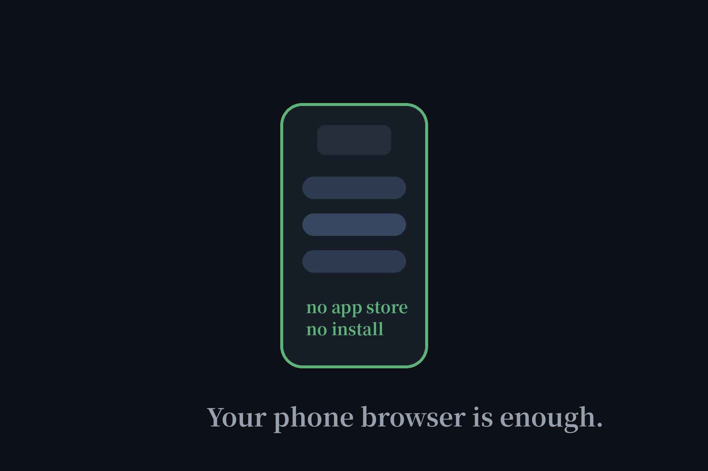

Free AI Agents for Mobile: No App Install Needed (2026)
Searching "free AI agent for mobile" usually lands you on app-store listings — downloads, permissions, accounts, updates. Here's the shortcut nobody advertises: the best no-signup AI agents are websites. Open them in your phone's browser and you're done. No install, no account, nothing to update. These five are the most phone-friendly of our verified directory.

Why the browser beats the app
An installed AI app gets device identifiers, notification permissions, background refresh, and your app-store identity — before you've typed a single prompt. A website in a private tab gets none of that. For the privacy-conscious, "no install" isn't just convenience; it's the difference between anonymous and fingerprinted. Every agent below works this way because they're web apps first.
The five, ranked for phone use
| # | Agent | Why it's good on a phone | Account? |
|---|---|---|---|
| 1 | Duck.ai | Clean chat UI, fast on mobile data | No |
| 2 | Andi | Search-style answers, great for quick lookups | No |
| 3 | Raphael AI | Generate images anywhere, unlimited | No |
| 4 | Perchance | Playful generators, thumb-friendly | No |
| 5 | DeepAI | Quick image generation on the go | No |
1. Duck.ai — the one bookmark to keep
If you keep a single AI bookmark on your phone's home screen, make it Duck.ai. The chat interface is lightweight enough for slow connections, needs no account, and strips your identity before prompts reach providers — which matters more on a phone that already knows everything about you. Full notes in our Duck.ai review.
2. Andi — for "just tell me the answer" moments
Half of phone AI use is looking something up, not chatting. Andi answers directly with source links instead of making you converse — faster when you're standing in a store aisle or mid-argument with a friend. No account, no app, just answers.
3. Raphael AI — unlimited images, anywhere
See something, want an AI spin on it, don't want to wait until you're at a desk: Raphael's unlimited free image generation runs fine in a mobile browser. Snap a photo for reference, describe the variation, download the result — all without an account.
4 & 5. Perchance and DeepAI — the backups
Perchance's generator playground is naturally thumb-friendly, and DeepAI gives you a second image option when Raphael is slow. Both verified no-account in our directory. Keep them as bookmarks two and three.
How to set it up (30 seconds)
Open your phone's browser, visit the agent, tap your browser's "Add to Home Screen" — on iPhone it's in the Share menu, on Android it's in the browser menu. You now have an icon that launches like an app, with none of an app's permissions. Use a private tab if you want sessions that vanish when you close them.
FAQ
Is there a free AI agent app that needs no sign-up?
Skip the app entirely: the best no-signup AI agents are websites, not apps. Duck.ai, Andi, and Raphael all run in your phone's browser with no install and no account — no app-store download, no permissions, no updates.
Do these work on both iPhone and Android?
Yes. Because they're web apps, they work in Safari, Chrome, or any mobile browser on either platform. There's nothing platform-specific to install.
Why not just install the official apps?
Official apps from the big AI companies require accounts and collect device-level data. The browser route gives you the same core features with none of that — which is the entire point of our directory.